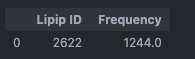

ProLint2: Analysis of lipid-protein interactions
In case of issues, please contact daniel.ramirezecheme@ucalgary.ca or tieleman@ucalgary.ca.
Summary
Introduction
ProLint2 is an open-source Python library for the automated analysis and visualization of lipid-protein interactions in molecular dynamics (MD) simulations of multicomponent membrane systems at atomistic or coarse-grained (CG) resolutions. It constitutes an update to the original ProLintpy library [1] that significantly improves computational efficiency and versatility [2].
For many years, proteins were the primary focus in studies of biological membranes, with lipids largely regarded as mere solvents for hydrophobic proteins. However, in recent years, the complexity of the lipid environment has gained recognition. The role of lipids in membrane protein functions can be described as (i) specific, when lipids directly bind to the protein surface, affecting the protein’s activity and/or stability, (ii) non-specific, when the physical properties of membranes, such as surface tension, thickness, curvature, and fluidity, influence protein function, or (iii) a combination of both. Selecting an accurate membrane model is crucial for drawing biologically relevant conclusions about the lipid-protein interplay in the system of interest.
This tutorial will focus on the use of ProLint2 for the analysis and visualization of specific lipid-protein interactions in a Martini simulation of the G-protein-gated inwardly rectifying potassium channel (GIRK). The system features a single GIRK copy within a lipid model composed of (POPE:1|POPS:1|CHOL:1), which mimics the inner leaflet of neuronal and cardiac cell membranes, where GIRK channels are physiologically active. Te purposes of these analyses is to highlight the capabilities of ProLint2 to analyze lipid-protein interactions, providing you with the basis for their application to any other membrane-protein MD system.
A Jupyter notebook to follow this tutorial can be accessed here.
Recommended Installation
To avoid conflicts with other Python packages, we recommend creating a dedicated environment for ProLint2 using conda. You can do this by running the following commands in your terminal:
conda create -n prolint2 python=3.10 jupyter
conda activate prolint2
python -m pip install prolint2ProLint2 relies on MDAnalysis to read input data files, which makes it compatible with all the most popular MD engines, including GROMACS, CHARMM, NAMD, LAMMPS, and OpenMM. MDAnalysis is a powerful Python library designed for analyzing MD trajectories. If you’re not familiar with it, we strongly encourage you to consult the MDAnalysis documentation for an overview of its features, supported file formats, and usage examples.
ProLint2 Workflow
ProLint2 simplifies the analysis of lipid-protein interactions by breaking it down into four sequential steps, which aligns with the four main components of the library:

• Universe
Once you load your trajectory files with ProLint2 it will automatically create a modified MDAnalysis Universe that keeps all the functionalities of any MDAnalysis Universe, but adds an extra set of methods and attributes that are specific for the analysis of membrane protein systems. These are based on the automatic categorization of residues into two essential components (database and query), as shown below:

This automation eliminates the need for manual removal of irrelevant residues, including water or ions.
• Contacts
The next step in the sequence involves the creation of ProLint2 Contacts instances, which keep track of the interactions between all the lipid and protein residues in the system. ProLint2 uses a distance-based approach to define contacts, which means that for every frame the algorithm checks whether a lipid molecule and a protein residue interact by verifying whether at least one atom from each group is within a defined distance cutoff. The default cutoff in ProLint2 is 7 Angstroms, which excludes weaker, less relevant interactions while capturing strong and meaningful ones. However, this parameter can be customized to meet any specific requirement. This step is the most time-consuming, and the total processing time will vary depending on the size of the system and the number of frames in the trajectory.
• Metrics
ProLint2 Metrics provides a tool to explore lipid-protein interactions at the residue-lipid type level of detail, which is not explicitly available in the Contacts objects. Default metrics such as SumMetric, MaxMetric, and MeanMetric provide insights into the strength and specificity of interactions with different lipid types in the system. Additionally, users can create custom metrics to mold the analysis to their specific requirements.
• Plotters
Finally, ProLint2’s Plotters provide a systematic way to visually reveal relevant interactions. Identifying important lipid types using exploratory Plotters and density plots is recommended as the first step, followed by a detailed examination of specific interactions. This approach optimizes the analysis workflow, and ensures a thorough exploration of the local lipid environment around proteins.
Creating a Universe and analyzing system composition
We will start by creating a ProLint2 Universe, using the GIRK sample dataset already included in the library:
from prolint2 import Universe
from prolint2.sampledata import GIRKDataSample
GIRK = GIRKDataSample()
pl_u = Universe(GIRK.coordinates, GIRK.trajectory)This sample data consist of the last 5 us of a 40-us-long Martini simulation of the GIRK system described in the introduction. For purposes of keeping the dataset light enough for the tutorial, snapshots were saved every 4 nanoseconds so that we had a total of only 1250 frames in our trajectory:
print(f"Trajectory data for GIRK starting at {pl_u.trajectory[0].time/1000000:.0f} us and ending at {pl_u.trajectory[-1].time/1000000:.0f} us, sampled every {pl_u.trajectory.dt/1000:.0f} ns.")Trajectory data for GIRK starting at 35 us and ending at 40 us, sampled every 4 ns.When the system was loaded, Prolint2 automatically identified the protein and lipid components in the system, which can be accessed as:
pl_u.query, pl_u.database(<ProLint Wrapper for <AtomGroup with 2956 atoms>>,
<ProLint Wrapper for <AtomGroup with 20864 atoms>>)Notice how both the query and database are ProLint wrappers around the MDAnalysis AtomGroups. This means that you get to keep all the functionalities of MDAnalysis AtomGroups, but you can also use additional ProLint2-specific functions, such as making changes to the query and database AtomGroups or accessing information to simplify the exploration of the system composition, as follows:
print(f"Membrane lipid composition is {dict(pl_u.database.resname_counts)}.")Membrane lipid composition is {'POPE': 652, 'POPS': 652, 'CHOL': 652}.print(f"First five residues of the protein are: {pl_u.query.get_resnames([1, 2, 3, 4, 5], out=dict)}")First five residues of the protein are: {1: 'ARG', 2: 'GLN', 3: 'ARG', 4: 'TYR', 5: 'MET'}Modifying the query and database AtomGroups
ProLint2’s automation for identifying protein and lipid components in the system relies entirely on residue names. For the query group (proteins), it automatically detects all standard and modified amino acids using the same criteria as in MDAnalysis.Universe.select_atoms("protein"). For the database group (membrane), it identifies lipid molecules based on their residue names, provided these names are part of a list of the most common lipid types defined by default in the ProLint2 configuration. However, if your system uses different residue names or if you wish to focus your analysis on specific residues, you can easily adjust the query and database groups accordingly.
To add a custom lipid type to the database group, you can use the add() method and reassign the database group as follows:
pl_u.database = pl_u.database.add("LIPX")This will add the LIPX lipid type to the database group. Please notice we are using the residue name “LIPX” here as an example of a custom lipid type, but you can use any residue name that is relevant to your system. As LIPX is not part of the GIRK system, it will not add anything in this case. This can be checked by running pl_u.database.resname_counts again.
To remove a residue from the query group, you can use the remove() method and reassign the query group as follows:
pl_u.query = pl_u.query.remove("ARG")
print(f"Number of arginine residues: {pl_u.query.resname_counts['ARG']}")Number of arginine residues: 0To add the ARG residues back to the query group in this case, we can use the add() method:
pl_u.query = pl_u.query.add("ARG")
print(f"Number of arginine residues: {pl_u.query.resname_counts['ARG']}")Number of arginine residues: 64Given the efficiency of ProLint2 for contacts calculations even in large systems, it is not recommended to remove residues from either the query or database groups unless you have a specific reason to do so. Focusing on certain residues can be done later in the analysis, when you are ready to explore specific interactions.
ProLint2’s units and normalizers
ProLint2 offers a set of time units and normalizers to facilitate the interpretation of the results. There parameters can be set at the Universe level, as follows:
pl_u.params{'units': 'us',
'normalizer': 'time_fraction',
'unit_conversion_factor': 1e-06,
'norm_factor': 0.0008}Here is a list of each parameter and its meaning:
units: this is the time unit we want to display the results in.normalizer: this is how we want to normalize the results.ProLint2supports three types of normalization:counts: Display the raw counts (i.e., count of frame numbers)actual_time: Normalize by the true simulation -> (dt/unit_conversion_factor)time_fraction: normalize by the total time of the simulation and divide by the total time of the simulation (i.e., numbers represent fractions of time spent in contact)
unit_conversion_factor: this is the conversion factor to convert the raw counts to the desired unit.norm_factor: this is the normalization factor that is updated based on the normalization type. For example, if the normalization type istime_fraction, then this factor isdt / totaltime.
These parameters can be modified by setting the Universe.units and Universe.normalizer attributes, as follows:
pl_u.units = "ns"
pl_u.params{'units': 'ns',
'normalizer': 'time_fraction',
'unit_conversion_factor': 0.001,
'norm_factor': 0.0008
}pl_u.normalize_by = "actual_time"
pl_u.params{'units': 'ns',
'normalizer': 'actual_time',
'unit_conversion_factor': 0.001,
'norm_factor': 4.0
}Contact-based metrics
Computing the contacts is the cornerstone in the ProLint2 workflow, as it provides the basis for all subsequent analyses. To create a Contacts instance, you can use the compute_contacts() method included in the Universe. You can define any distance cutoff for defining contacts, otherwise it will use 7 Angstroms by default. Here is how to create a Contacts instance for the GIRK system:
pl_c = pl_u.compute_contacts(cutoff=7.0)Contacts information is stored in two main attributes: pl_c.contacts and pl_c.contact_frames, with structures: {Query_ResID: {Database_ResType: [Contact_Windows]}} and {Query_ResID: {Database_ResID: [Frame_Numbers]}} respectively. The contact windows are defined as the time intervals in which a contact is established between a lipid and a protein residue, while the frame numbers are the corresponding frame numbers in the trajectory. The output of these attributes is shown below for demonstration purposes, but ProLint2 is designed to help you explore this information in a more user-friendly way, as we will see in the next sections.
pl_c.contacts[14]defaultdict(list,
{'POPE': [np.float64(4.0),
np.float64(4.0),
np.float64(8.0),
np.float64(4.0),
np.float64(4.0),
np.float64(4.0),
np.float64(4.0),
np.float64(4.0),
np.float64(4.0),
np.float64(4.0),
np.float64(4.0),
np.float64(4.0),
np.float64(4.0),
np.float64(4.0),
np.float64(8.0),
np.float64(4.0),
np.float64(4.0),
np.float64(8.0),
np.float64(4.0),
np.float64(4.0),
np.float64(4.0),
np.float64(4.0),
np.float64(4.0),
np.float64(8.0),
...
np.float64(8.0),
np.float64(4.0),
np.float64(16.0),
np.float64(4.0),
np.float64(4.0)]})The output above can be interpreted as follows: for residue 14, there are several contact windows with POPE lipids, each lasting 4 ns, 4 ns, 8 ns, and so on. In contrast, it has only two contact windows with POPS lipids, both lasting 4 ns (equivalent to 1 frame in the trajectory). This information is provided for all protein residues in the system that have at least one contact with any lipid type.
pl_c.contact_frames[14]defaultdict(list,
{np.int64(2527): [0,
15,
20,
21,
25,
35,
38,
47,
49,
65,
197,
246,
251,
291,
323],
np.int64(2760): [0, 2],
np.int64(2800): [2, 7, 8, 13, 18, 20, 21, 22, 24, 27, 33, 57],
np.int64(2506): [10, 11],
np.int64(2888): [11,
13,
15,
19,
353,
355,
...
1240,
1241],
np.int64(2776): [1228, 1244],
np.int64(2347): [1236],
np.int64(2480): [1239, 1240, 1250]})The output above can be understood as follows: protein residue 14 interacts with lipid residue 2527 in frames 0, 15, 20, and so on; it only interacts with lipid residue 2760 in frames 0 and 2, and with lipid residue 2800 in frames 2, 7, 8, and so forth. This information is provided for all protein residues in the system that have at least one contact with any lipid molecule. While ProLint2 facilitates easy exploration of this data, you can always access the raw data in these attributes if you wish to conduct any other type of analysis.
We will now proceed to the next step in the ProLint2 workflow, which involves creating metrics based on the contacts we have just computed. Metrics serve as a means to quantify the various interaction patterns between lipids and protein residues within the system. Given the highly dynamic nature of lipids, these interactions can be transient, depending on the affinity, meaning they can be quickly established and replaced by another lipid molecule, or persistent, indicating they can last for an extended period. Additionally, the specificity of the interaction can be high, meaning it is established with a specific lipid type, or low, meaning it can occur with any lipid type. ProLint2 offers a set of default metrics:
- MaxMetric: This metric finds the longest contact window between each residue and each lipid type. If this metric is high for a certain residue-lipid_type combination, that interaction is likely to have high affinity.
- MeanMetric: This metric calculates the average duration of contact windows between each residue and each lipid type. If this metric is high for a certain residue-lipid_type combination, that interaction is likely to be of high affinity and can be considered specific or not depending on the total fraction of time the contact is maintained.
- SumMetric: This metric counts the sum over all the contact windows between each residue and each lipid type. The interpretation of this metric can only be done in the context of the membrane lipid composition, as the more representative the lipid type is in the system, the more likely it is that the interaction happens by chance. For example, if a residue has a high SumMetric with a lipid type that is very abundant in the system, it is likely that the interaction is not specific, but rather a consequence of the high concentration of that lipid type in the system. On the other hand, if a residue has a high SumMetric with a lipid type that is not abundant in the system, it is likely that the interaction is specific. In addition, the SumMetric results can be contaminated by the fact that more than one lipid of the same type can be in contact with the same residue simultaneously, which can lead to values that are higher than the total simulation length.
To use the default metrics, you can use the compute_metrics() method included in the Contacts objects:
from prolint2.metrics.metrics import Metric, MeanMetric, SumMetric, MaxMetric
metric_instances_list = [MeanMetric(), SumMetric(), MaxMetric()]
metric_instance = Metric(pl_c, metric_instances_list)
contacts_out = metric_instance.compute() Visualization
Prolint2 provides a set of Plotters to visualize results of lipid-protein interactions at different levels of detail:
We recommend using the Plotters in a systematic way, starting with exploratory Plotters to identify relevant lipid types and metrics, followed by a detailed examination of specific interactions. This approach optimizes the analysis workflow and ensures a thorough exploration of the local lipid environment.
Exploratory Point Distribution Plotter
from prolint2.plotting.multiples import MultiplePointDistribution
MPD = MultiplePointDistribution(pl_u, contacts_out)
MPD.create_plot()
The peaks displayed in the plot above highlight the regions of the protein that are directly exposed to the membrane, while the areas between the peaks represent fragments of the protein forming the internal core. This analysis revealed that interactions with POPE appear to be less relevant, as the metric values are lower than those of other lipids with similar representativeness in the system. On the other hand, it shows specific interactions with CHOL and POPS that merit further exploration, corresponding to the notably high MeanMetric values observed for certain residues. For this tutorial, we have decided to use normalized lipid density profiles and logo plots to analyze the interactions with POPS lipids.
Normalized Lipid Density Plotter
from prolint2.plotting import DensityMap
Dens = DensityMap(pl_u, fig_size=(6, 6))
Dens.create_plot(lipid_type='POPS', interpolation='nearest', cmap='viridis')
Sequence Logo Plotter
from prolint2.plotting import LogoResidues
LR = LogoResidues(pl_u, contacts_out)
LR.create_plot(lipid_type='POPS', metric_name='MeanMetric')
From this, we can identify three residues with high MeanMetric values with POPS: Val354, Lys461, and Lys467. The figure below illustrates that these residues are closely situated within the protein structure, forming a potential binding site for POPS.

The specificity of this interaction is anticipated due to the positively charged lysine side chain, which can engage in electrostatic interactions with the negatively charged headgroup of POPS. To further investigate this interaction, we can use an Interaction Heatmap Plotter to visualize the contact pattern at the atom-atom level of detail. For these analyses, we must first identify the POPS molecule that most frequently interacts with one of these residues, let’s choose Lys461. We can get this information by using the get_lipid_contact_durations() function, which provides a dataframe listing the lipid molecule IDs sorted by their total contact frequencies.
from prolint2.plotting.utils import get_lipid_contact_durations
get_lipid_contact_durations(pl_u, pl_c, 'POPS', residue_id=461)
Interaction Heatmap Plotter
From this, we can identify a POPS molecule with ID 2329 that exhibits the highest contact frequency with residue 461. With this information, we can now create an Interaction Heatmap Plotter, as follows:
from prolint2.plotting import InteractionHeatMap
IHM = InteractionHeatMap(pl_u, pl_c)
IHM.create_plot(residue_id=461, lipid_id=2622, palette='Reds')As expected, the interaction occurs mostly between the headgroup of POPS and the positively charged second bead of the lysine side chain. To look deeper at the evolution of this specific interaction as a function of time, we can use the TwoPointDistanceEvolution Plotter:
from prolint2.plotting import TwoPointDistanceEvolution
TPD = TwoPointDistanceEvolution(pl_u)
TPD.create_plot(lipid_id = 2622, lipid_atomname='PO4', residue_id = 461, residue_atomname='SC2', unit = 'frame', smooth_line = True, n_points = 250, useOffset = True)This plots confirms the expected short distance (below the 7-Angstrom cutoff) between the phosphate bead of POPS 2622 and the second bead of the side chain of Lys461 throughout the entire simulation.
Advanced applications
For more advanced application, please refer to the following sources:
- Zhekova, H. R., Echemendía, D. P. R., Sejdiu, B. I., Pushkin, A., Tieleman, D. P., & Kurtz, I. (2024). Molecular dynamics simulations of lipid-protein interactions in SLC4 proteins. Biophysical Journal, 123(12), 1705–1721. https://doi.org/10.1016/j.bpj.2024.05.013
- Cino, E. A., Ramirez-Echemendia, D. P., Hu, S., & Tieleman, D. P. (2024). Analyzing lipid distributions and curvature in molecular dynamics simulations of complex membranes. In Methods in Enzymology. Academic Press. https://doi.org/10.1016/bs.mie.2024.03.014
Conclusions
In this tutorial, we have showcased the capabilities of ProLint2 for the analysis and visualization of lipid-protein interactions using as example a Martini simulation of the GIRK system. We have seen how to create a ProLint2 Universe, compute contacts, and analyze lipid-protein interactions using different metrics and levels of detail. The goal is to provide you with the basis for you to start exploring lipid-protein interactions in your own systems, using the incredible versatility of ProLint2. Please do not hesitate to reach out to the authors if you have any questions or suggestions for improvements.
Tools and scripts used in this tutorial
The source code is available here: https://github.com/ProLint/prolint2. The documentation is available here: https://prolint2.readthedocs.io/en/latest/.
References
[1] Besian I Sejdiu, D Peter Tieleman, ProLint: a web-based framework for the automated data analysis and visualization of lipid–protein interactions, Nucleic Acids Research, Volume 49, Issue W1, 2 July 2021, Pages W544–W550, https://doi.org/10.1093/nar/gkab409
[2] Ramirez-Echemendia, Daniel P., et al. “ProLint v. 2: An Optimized Tool for the Analysis and Visualization of Lipid-Protein Interactions.” Biophysical Journal, vol. 123, no. 3, 2024, p. 372a.